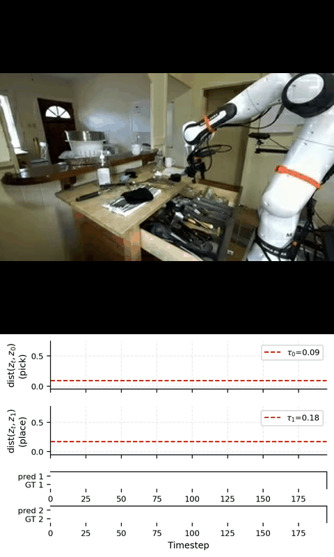

Runtime monitoring of autonomous systems traditionally relies on mapping continuous sensor observations to discrete logical propositions defined over low-dimensional state variables. This abstraction breaks down in perception-driven settings, where such mappings require additional learned modules that are often computationally expensive, brittle, and semantically misaligned. In this work, we propose Embedding Temporal Logic (ETL), a temporal logic that performs monitoring directly in learned embedding spaces. ETL defines predicates through distances between observed embeddings and target embeddings derived from reference observations. This formulation allows specifications to capture high-level perceptual concepts, such as similarity to visual goals or avoidance of semantic regions, that are difficult or impossible to express using traditional predicates. By composing these predicates with temporal operators, ETL naturally expresses temporally extended and sequential perceptual behaviors. We introduce ETL monitors for evaluating specifications over bounded embedding traces, along with a conformal calibration procedure that provides reliable and safety-oriented predicate evaluation.
Embedding Temporal Logic (ETL): A temporal logic formalism that defines predicates through distances in learned embedding spaces, enabling specifications over high-level perceptual concepts without discrete state abstraction.
Formal Semantics & Monitoring: Boolean satisfaction semantics for bounded embedding traces with practical online monitoring, supporting temporally extended and sequential perceptual behaviors.
Threshold Calibration: Data-driven calibration methods including F1-optimal and conformal prediction approaches tailored for safety-critical monitoring, improving recall from 0.83 to 0.93 while maintaining precision.
Empirical Validation: Evaluation across Dubins Car navigation, simulated manipulation (MetaWorld, D3IL), and real-world DROID datasets, demonstrating faithful monitoring of atomic and sequential perceptual behaviors.
ETL monitors run online alongside the robot policy, producing Boolean predicate traces in real time. Below are representative monitoring rollouts across three evaluation domains.



ETL is evaluated across three domains. On Dubins Car navigation, ETL achieves F1 scores of 0.80–0.85 for reach, avoid, and reach-avoid specifications, with agreement exceeding 96%. On simulated manipulation tasks, ETL achieves an average F1 of 0.817, outperforming the logpZO baseline (0.790) and PCA-kmeans (0.751). On real-world DROID data, ETL achieves a mean F1 of 0.813 and agreement of 0.940, significantly outperforming the Qwen2-VL-2B vision-language baseline (F1 0.390). Sequential ordering is correctly identified in 4 of 5 episodes.


@article{kapoor2026etl,
title = {Runtime Monitoring of Perception-Based Autonomous Systems via Embedding Temporal Logic},
author = {Kapoor, Parv and Hammer, Abigail and Kapoor, Ashish and Leung, Karen and Kang, Eunsuk},
journal = {arXiv preprint arXiv:2605.12651},
year = {2026}
}